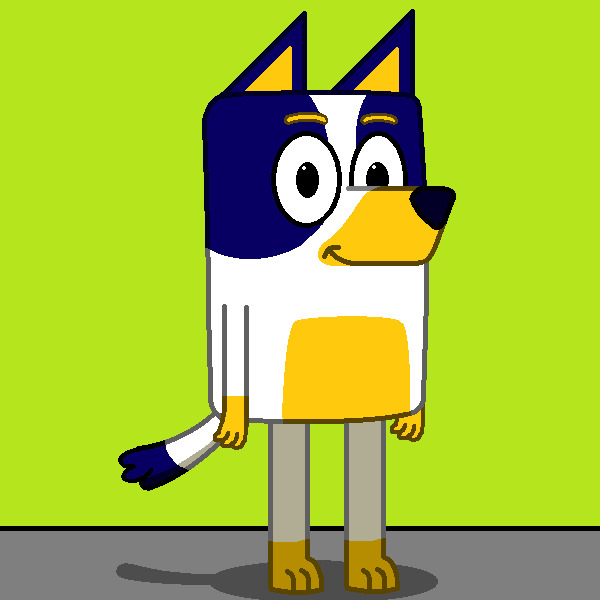

| RÓLAM | PROJEKTEK | EGYÉB |

Rajzoló program 2.1.3
- A vezérléseket megtalálod a projektben
Nyíl kapás Bluey-val
- Nyílakkal tudsz mozogni
Lövöldözős játék teszt
W, A, S, D - mozgás
szóköz - ugrás
W/S és "+" kombinációja - futás
Enter - Lövés
A Character.AI platformon készítettem chatbotokat, amik beszélgetnek. Itt érheted el őket:
|  | Jenson Heeler |
Fájlból szöveg
HTML gyors nézet
Ennyi most, még lesz bővítés...